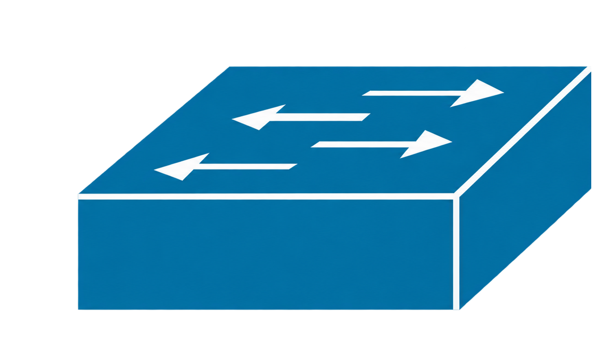

Módulo 05
RIPv2 básico.
RIPv2 es un protocolo de routing dinámico: los routers intercambian información y aprenden rutas sin escribir una ruta estática por cada destino. Aquí lo usaremos para entender ese intercambio en una red pequeña.
Cuándo usarlo
RIP mide distancia por cantidad de saltos y admite hasta 15. Debe configurarse en todos los routers participantes. Usa RIPv2 y desactiva el resumen automático para que las subredes se anuncien correctamente.
Topología del ejemplo
Usaremos dos routers, cada uno con su propia LAN. El enlace entre R1 y R2 es donde intercambian rutas RIP. El puerto hacia el switch también pertenece al proceso RIP para anunciar la LAN, pero no necesita enviar actualizaciones a los equipos de esa red.

SW1PC → gateway 192.168.10.1Configura y habilita primero las interfaces indicadas. Los switches conectan los PCs; RIPv2 se configura en los routers.
Anunciar redes conectadas
Con las direcciones de la topología ya asignadas, entra a router rip en cada equipo. network incluye las interfaces de esas redes en RIP; la red LAN se anuncia al vecino a través de la WAN.
R1 · LAN 10
R1(config)# router rip
R1(config-router)# version 2
R1(config-router)# no auto-summary
R1(config-router)# network 192.168.10.0
R1(config-router)# network 10.0.0.0
R1(config-router)# passive-interface gigabitEthernet 0/0
R1(config-router)# endR2 · LAN 20
R2(config)# router rip
R2(config-router)# version 2
R2(config-router)# no auto-summary
R2(config-router)# network 192.168.20.0
R2(config-router)# network 10.0.0.0
R2(config-router)# passive-interface gigabitEthernet 0/0
R2(config-router)# endpassive-interface gigabitEthernet 0/0 evita enviar actualizaciones RIP hacia los PCs de la LAN. La red sigue anunciándose a R2 o R1 por G0/1; la interfaz pasiva sigue transportando tráfico normal. Si tu router usa otros nombres de puertos, sustituye G0/0 por la interfaz real que mira hacia la LAN.
Comprobar el intercambio
R1# show ip protocols # confirma RIPv2 y la interfaz pasiva
R1# show ip route rip # debe incluir 192.168.20.0/24
R2# show ip route rip # debe incluir 192.168.10.0/24Cuando las rutas aparezcan con la letra R, prueba un ping entre los PCs. Revisa sus gateways, el estado de G0/1 y que esa interfaz no haya quedado pasiva si no se reciben rutas.